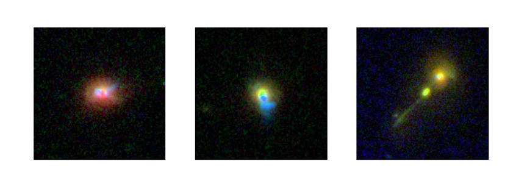

January 9, 2008
SDSS reveals hidden population of powerful black holes

These pictures show galaxies that host three of the hidden quasars found in the Sloan Digital Sky Survey (SDSS-II) sample. In every image, the quasar is at the center of the galaxy, but our view to it is obscured by dust. In the central image, the blue patches of light serve as an indirect indicator of the hidden quasar in the center of the galaxy. The same signature, although fainter, can be seen in the image on the left. The unusual shape of the right-most galaxy indicates that this object is undergoing interactions with a smaller galaxy that is being ripped apart. These images were obtained using the Advanced Camera for Surveys onboard the Hubble Space Telescope.
(Credit - SDSS Collaboration, Nadia Zakamska, Institute for Advanced Study)